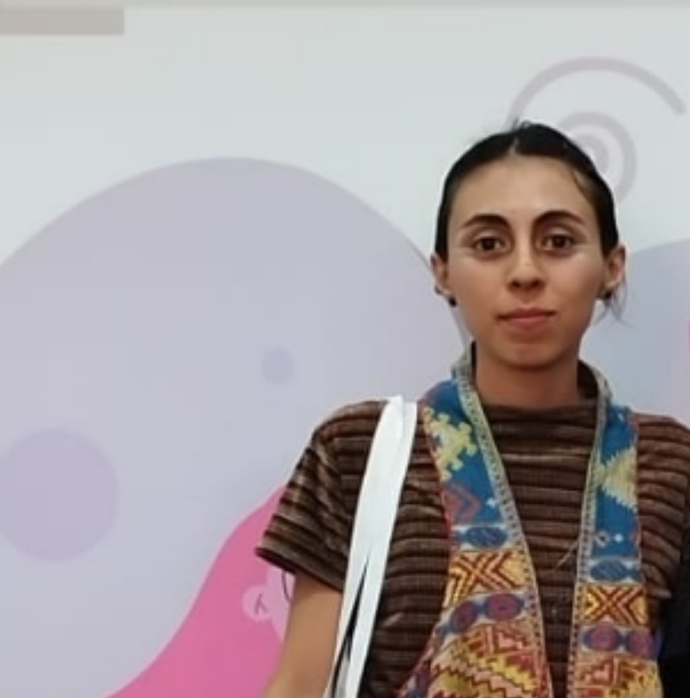
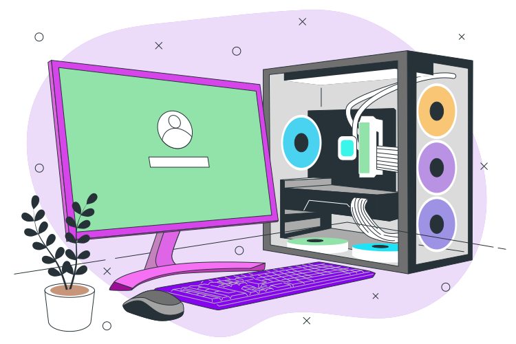
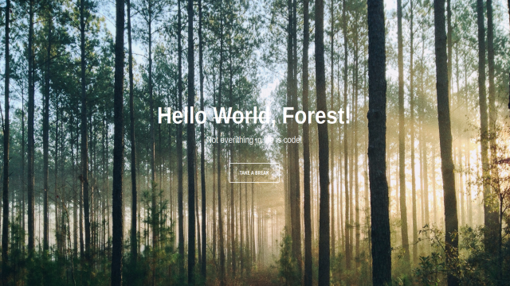
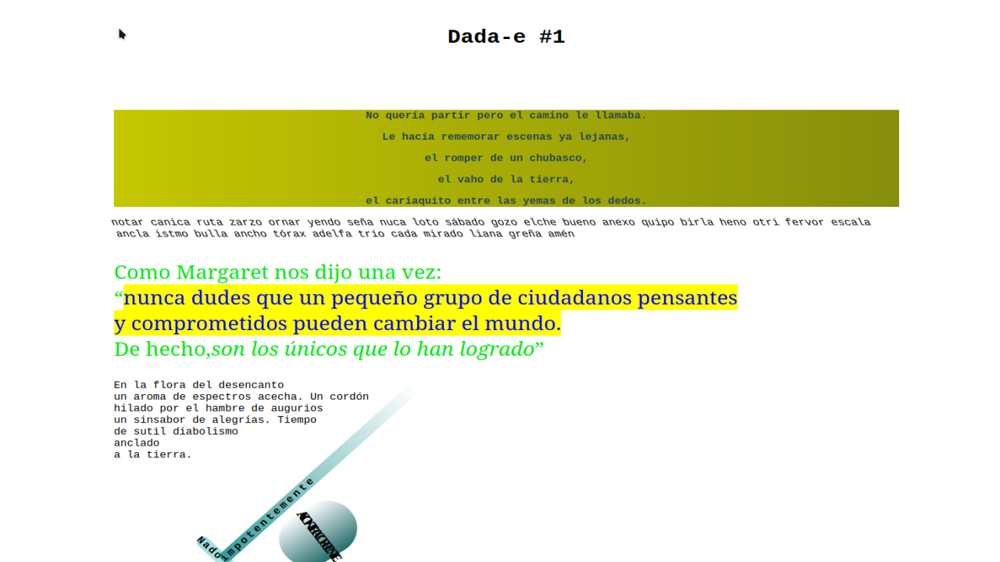
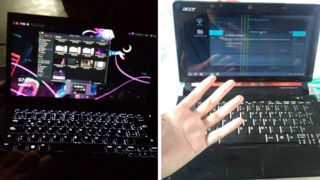
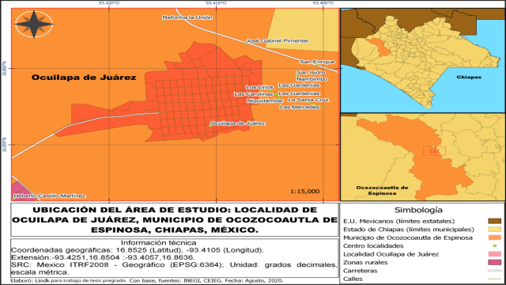
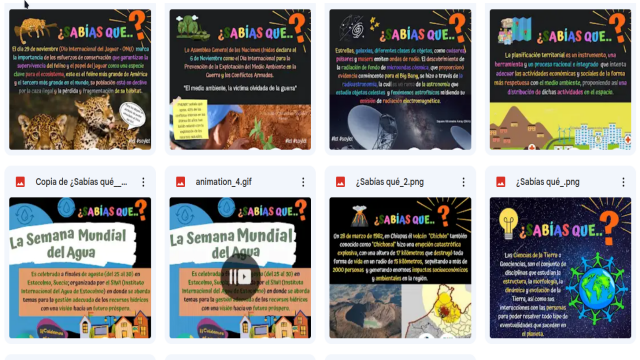

Tengo formación en Ciencias de la Tierra hacia un enfoque social, comunitario y ambiental. Incentivo y trabajo en la fusión de conocimientos que se encaminan al soporte de tecnologías de la información para ciencias ambientales, informática medioambiental o “Enviromática”. Me interesa la cooperación transversal y retroalimentación interseccional entre pares, la gestión de RSU, Permacultura, el diseño circular, periodismo, subversividad, cacharreo, autogestión, recuperación de equipos de cómputo, software libre, entre otros. Soy una persona autodidacta, curiosa y queer.
Desarrollo Tech
Construyo sitios web e instrumentos modernos con tecnologías transparentes y con bajo consumo de recursos.
Publicaciones
Difundo información sobre ciencia, sociedad, tecnología, expresión, educación y filosofías libres o abiertas, en mi Cápsula Gemini - Blog Web; también comparto en algunas redes privativas para difundir pero estoy activamente en el Fediverso.
Otros
Por mi formación e intereses, tengo diversas experiencias aplicables y adaptables a gran cantidad de situaciones.
Estudiante
Me encuentro en constante y amplia formación para estar actualizada con un panorama de conocimiento analítico, crítico e integral en beneficio comunitario y vivencial.




